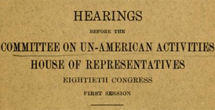

Digital HUAC
Transforming the elusive HUAC testimonies into an accessible research environment by creating an online, searchable repository.


HUAC History
Learn more about the congressional committee that investigated the private lives of hundreds of Americans.